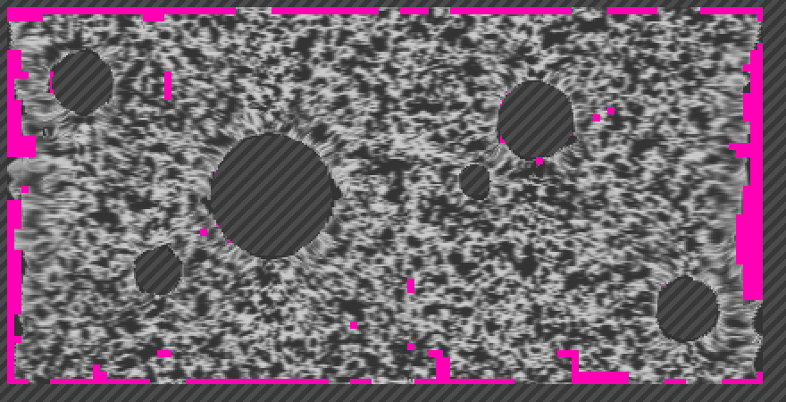
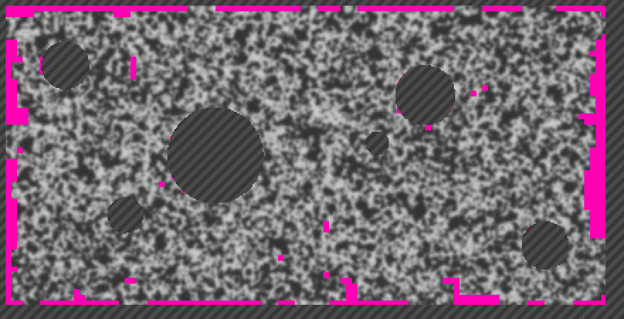
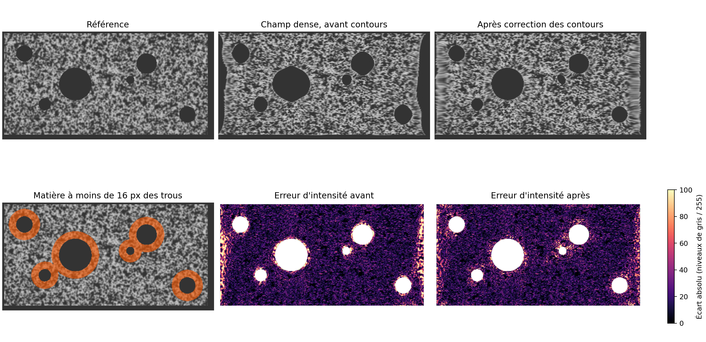
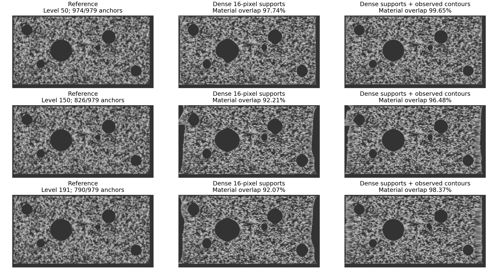
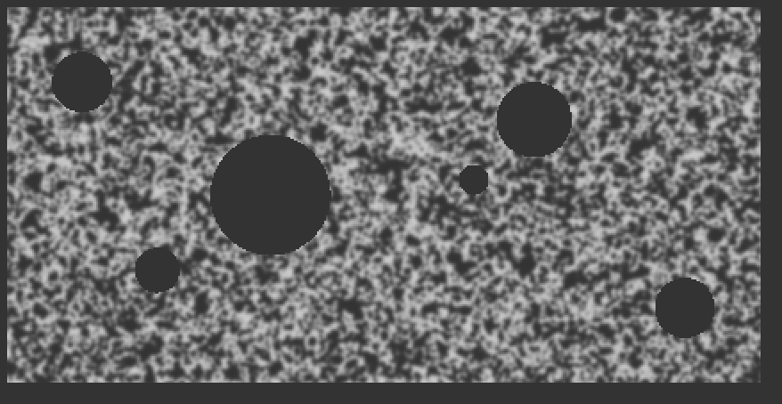
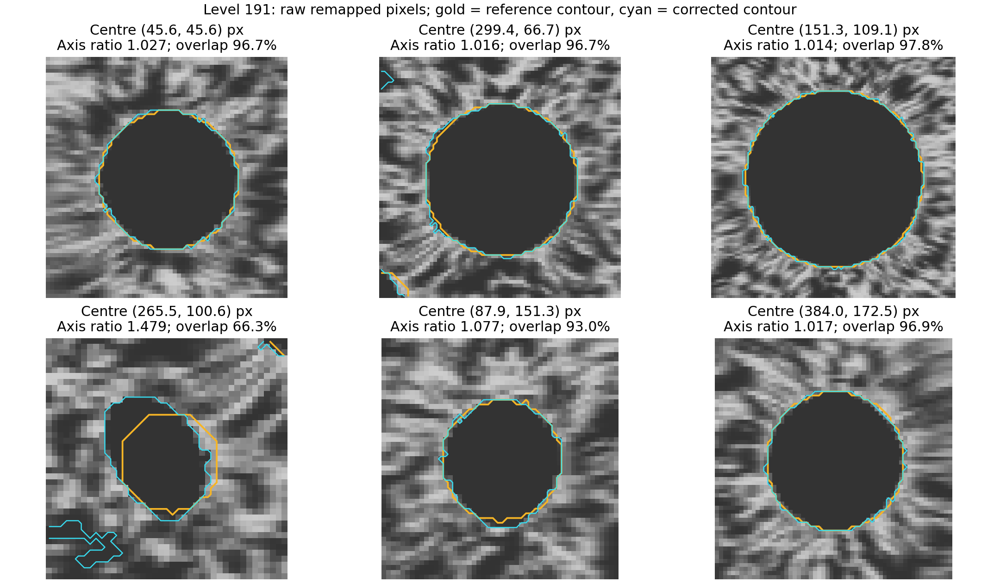
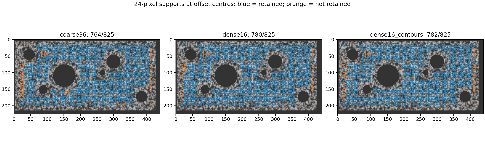

Moins de zones perdues, sans modifier le champ près des trous. Les ajouts douteux restent en magenta.
Résultats et contrôles détaillés
Sans correction de contour. Magenta : matière non résolue ; hachures : hors matière. Le bord immédiat reste insuffisamment recalé.
Ouvrir les résultats, les limites et les comparaisons
La correction des contours n’est pas une initialisation qualifiée près des trous. Elle rapproche les formes mais dégrade le mouchetis entre 4 et 16 pixels des trous. Aucun des 825 centres de contrôle n’est situé à moins de 8 pixels d’un trou.
| Distance aux trous | Avant correction | Après correction |
|---|---|---|
| 4–8 pixels | 0,700 | 0,614 |
| 8–16 pixels | 0,864 | 0,774 |
Ces corrélations regroupent les pixels de chaque bande : ce ne sont pas des scores de fenêtres du solveur.

En haut : référence, champ dense avant correction, puis correction des contours. En bas : couronne de matière examinée et écarts absolus d’intensité sur une échelle commune. Les trous blancs dans les cartes de résidus sont hors matière et ne sont pas évalués.
Ouvrir la figure en pleine résolution · Diagnostic détaillé · Résultats bruts
Les pixels proviennent exclusivement de l'image déformée originale, échantillonnée avec le champ estimé. Aucun cercle ni fond n'est redessiné. Les contours observés participent à l'ajustement : leur bon accord n'est donc pas une validation mécanique indépendante.
Au niveau 191, le contrôle sur 825 centres décalés retient 764 fenêtres avec le champ grossier, 780 avec le champ dense et 782 avec la correction de contour. Il reste des échecs.
Document explicatif en PDF · Protocole et fichiers

Alternance référence / image déformée remappée. Agrandissement ×2 sans lissage d'affichage.

Référence native · Déformée corrigée native · Déformée originale · Initialisations à six paramètres
Alternance référence / image déformée remappée. Agrandissement ×2 sans lissage d'affichage.
Référence native · Déformée corrigée native · Déformée originale · Initialisations à six paramètres
Alternance référence / image déformée remappée. Agrandissement ×2 sans lissage d'affichage.
Référence native · Déformée corrigée native · Déformée originale · Initialisations à six paramètres

Or : contour de référence. Cyan : contour après remapping. Le petit trou reste mal restitué.

Les supports de 24 pixels recouvrent partiellement les observations de 16 pixels : ce contrôle n'est pas un test sur des images indépendantes. Les statuts ne certifient pas l'exactitude du déplacement.